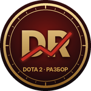

DotaRazbor
Free Dota 2 match analysis in Telegram
Send a Match ID to the bot and see where you lost your lane, who killed you and why, what you should have built and how your farm compares with players of your rank. Free, no registration.
Open the bot in Telegram Our Shorts on YouTubeWhat the bot shows
- Main mistakes of the match and what to do next game.
- Your lane, farm and net worth against your opponent, minute by minute.
- Death map: where, how and from whom you died.
- Item timings compared with pro players on your hero.
YouTube
We publish short tips about the bot on our YouTube channel. Our videos are uploaded to our own channel with YouTube API Services. Watching them on YouTube is subject to the YouTube Terms of Service and the Google Privacy Policy. See our Privacy Policy for how we handle data.